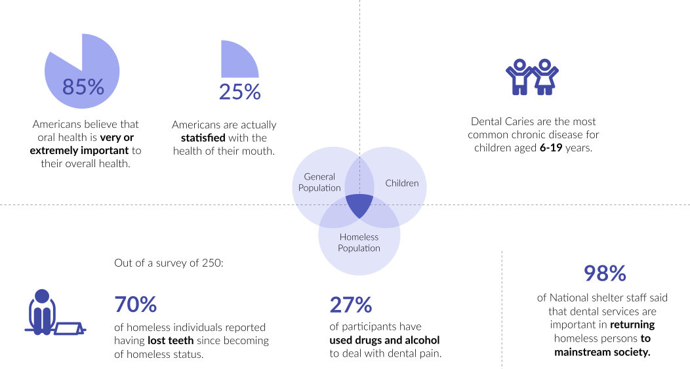
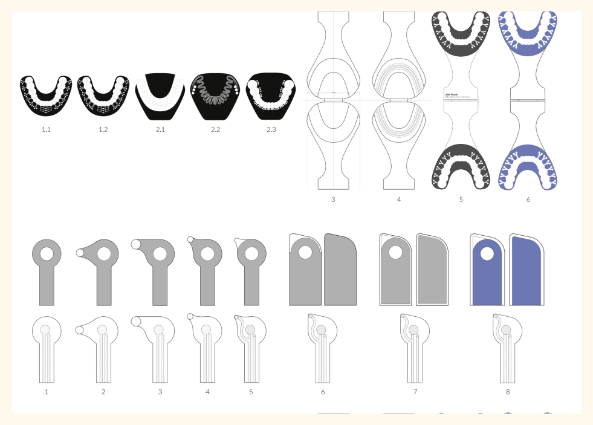

Intercepting the wicked cycle of homelessness through
addressing dental health
Smil
This project took myself, Jenny
Jiang, and Luke
Reeve 6 Weeks. My role was Lead Designer covering UI/UX, Graphics, 3D Modelling,
and Rendering.
Dental health silently contributes to wellbeing
The vicious cycle of homelessness is intensified by oral health
problems. Out of a survey of 250 homeless individuals, 70% of
individuals reported having lost teeth since losing a home, 27%
of those who have turned to drugs and alcohol to alleviate oral
pain. Oral health is woven into the fabric of daily life,
silently contributing to physical well-being, social confidence,
and mental health.
SmilBox is a kit of paper-based tests and point-of-care devices
that help to screen for oral health disease outside of the
dental clinic. It aims to overcome physical and mental access
barriers to oral healthcare, empowering everyone, but
particularly young individuals within marginalized communities,
to engage in caring for their health.
Access to healthcare is not a given
Oral health complications are currently strictly diagnosed and
treated in dental clinics. The stigma and financial barriers
associated with seeing dentists often prevent those most in need
from reaching help. For marginalized groups, this creates a
cycle of pain and fear towards dental problems.

Lifestyle habits impact caries
Throughout the research stage of the project, we interviewed
dental practitioners, researchers, and users in order to gain
insight and obtain feedback. Through these interviews, our focus
area was refined to the problem of Caries. The chances of an
individual having Caries is incredibly high, with 9 out of 10
adults over the age of 20 having some degree of tooth-root
decay. This is a result of various factors but notably acid
erosion through diet. Caries currently can only be detected by a
dentist who uses a variety of techniques, of which pH measuring
is considered by many as a low-cost and effective diagnosis.

Searching for a low-tech public intervetion
The process began with ideations of interventions. Each idea was
evaluated against technical feasibility and originality. Through
this process, we found portable technologies and affordable
paper-based technologies particularly promising because they
could help to fill the last-mile space between an individual and
a dental clinic. The testing phase consisted of exploring
different mediums of intervention and prototypes spanning from
paper to digital using material, form, chemicals and app usage.
Iterations were made based on feedback from professors, peers,
designers, scientists, and practitionors.

Challenge 1: What would stick?
One of the foremost challenges was to find an intervention that
had higher likelihood of being adopted and sticking around in the
system. Any intervention would need to be cheap, low-tech, easily
usable, and adapt to the transient nature of moving from community
to community.
Paper-based assay tests were the optimal testing medium due to their
ability to detect for very specific conditions, and the low-cost to
manufacture. We conducted a number of studies to help us make broader
design decisions.

Challenge 2: Balancing the technical with the usable
The design process involved multiple iterations responding to testing
feedback to ensure the designs were usable. One of the biggest struggles
with the design development, was finding ways to integrate the technical
functionality into the design itself. This was particularly important for
getting the devices to work in conjunction with one another.
For example, we split the tooth design up into a whole mouth and
single tooth test to accommodate the different technical needs,
where one was more interested in gauging overall mouth health,
while the other was important for confirming those test results.

Challenge 3: Considering the whole ecosystem
Finally, in order for all the prototypes to be able to collect
and deliver information, it was important to consider the whole
ecosystem of products. A central digital hub needed to be able to
help measure and store information for consulting dentists to be
able to use. This hub needed to connect all the devices and
stakeholders together.
In order to address the different levels of information needed
by stakeholders, the digital hub was split into two experiences,
the dentist app, and the patient app. These two experience
flows were complementary and mirrored in communication features
(e.g through a chat). In considering the whole ecosystem,
stakeholders from experts, to volunteers at shelters, to users
and their networks, were considered.
Introducing Smil
Smil is a kit of paper-based tests and point of care devices
that help to screen for various oral health diseases, namely
cavities or caries, outside of the dental clinic. The kit
consists of multiple parts: Single-use paper tests for the whole
mouth and individual teeth, 2 diagnosis readers, an endoscopic
camera, and a mobile application for communication with a
dentist clinic.
Smilbox Kit

Kit Components

Paper-based Test Design
Mobile Application Design

Reflections & Learnings
- Work from both ends of the product - storytelling and market fit, and design approach. There are alternative ways to look at systemic issues and to solve for them - beginning with the technology, or with the impact space. In this instance, we worked our way from both ends to find a fitting solution. It's important that these issues are not dropped due to the scale of complexity and difficulty of finding the right problem space.
- Interface design goes beyond the design of the screen it was intended for, and into the design of the overall experience itself, ie. the product, branding, or even packaging.